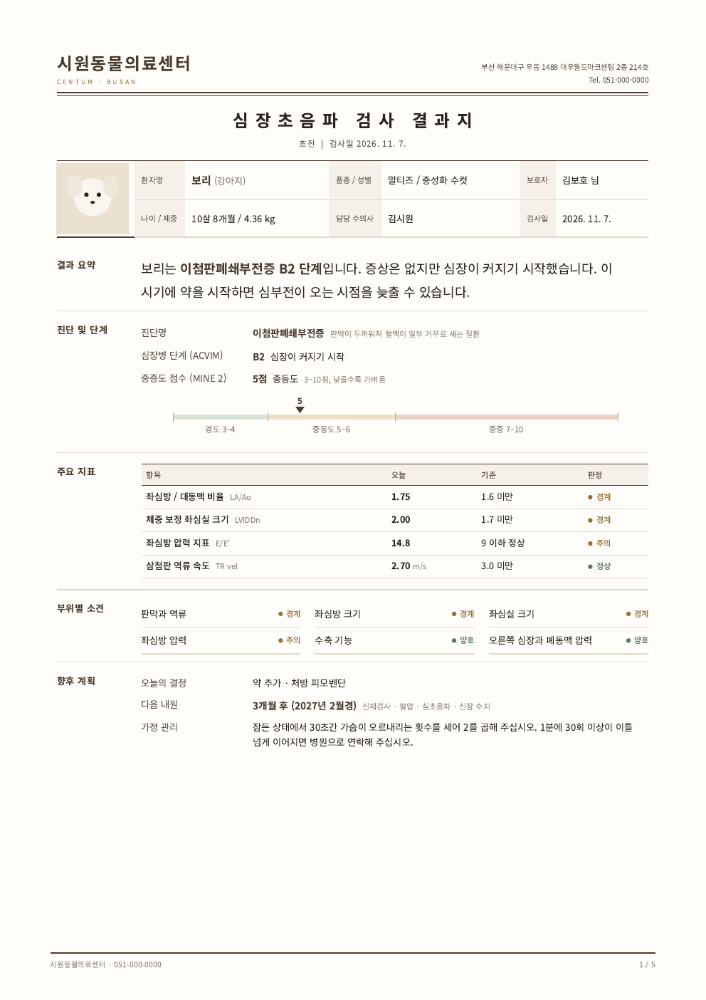

이렇게 만듭니다
리포트의 다섯 가지 원칙
01
첫 장은 결론만
맨 앞에는 “지금 어떤 상태이고 무엇을 하기로 했는지”만 적습니다.
02
모든 숫자에 기준을
수치 옆에는 항상 기준값과 그 의미를 함께 적어, 숫자만 덩그러니 있지 않게 합니다.
03
판단의 근거까지
“B2 단계입니다”가 아니라 어떤 기준에 해당해서 그렇게 판단했는지 보여 드립니다.
04
할 일로 끝맺기
오늘 무엇을 했고, 집에서 무엇을 보고, 언제 다시 오면 되는지로 마무리합니다.
05
재진은 변화 중심
재진 리포트의 주인공은 “지난번 → 오늘”입니다. 같은 설명을 반복하지 않습니다.
06
다른 병원에서도 읽히게
뒤쪽에는 측정값 원자료를 붙여, 다른 병원에 가져가셔도 그대로 참고할 수 있습니다.
예시
심장초음파 결과지
가상의 환자 “보리”로 만든 예시입니다. 실제 리포트는 아이마다 검사 항목에 따라 구성이 달라집니다.
- 결과 요약 한 문단
- 진단명과 단계, 중증도 점수
- 주요 지표: 오늘 값 · 기준 · 판정
- 부위별 소견과 향후 계획
- 검사 항목별 설명과 측정 원자료

초진 리포트
처음 검사한 결과와 진단, 앞으로의 관리 계획을 자세히 담습니다.
재진 리포트
지난번과 오늘을 나란히 놓고, 좋아진 점과 지켜볼 점을 짧게 정리합니다.
건강검진 리포트
검사 항목별 결과와 다음 검진 때 다시 볼 항목을 정리합니다.